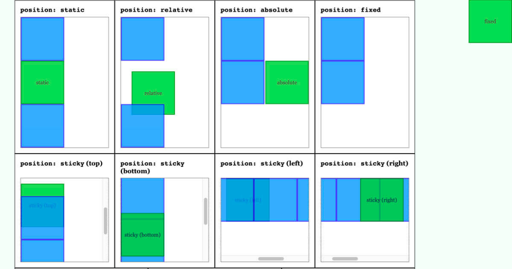

Positioning is a way of telling the browser how we want our elements to interact with the viewport. The different position values allow our elements to take on a range of positioning behaviours.
The position properties look like this:

Different types:
static
Static is the positioning element that all elements start off with by default on the page. If we’re thinking about elements as a block of pixels, static just means it will display in its normal form. The static property is the default property so the only time we would declare it would be if it were to overwrite a property declaration made by a parent element. To try and make an attempt at an analogy, the static element acts like a still photo frame of your family (without you in it...).Absolute
This position property lets you place items literally wherever you want on the page. With the use of top, bottom, left and right you can position the item in the exact spot you want. The Absolute element does have a higher Z-index than static element’s, however you can use the z-index property to get the element to display at the desired depth. An analogy for the absolute position value would be, if you took the still photo from the above static positioning analogy, then got a pin and a cut out photo of yourself and pinned it where ever you wanted on the image of you’re family which you didn’t make the cut for the first time.
Fixed
Fixed is exactly what it sounds like. The element is fixed within the viewport of the display. Ever noticed how some header nav’s stay in place as you scroll down the page? Thats a fixed position element. An example best portrays the fixed element because there’s one right there. not there, up there. Your browser top bar acts in the way a fixed element would within a web page. (Also the heading for this blog post!)
Relative
Relative is an element I have had trouble with in the past, but in my research for this post I can across a line that was very simple, thats helped me understand how it works. Relative means to be relative to itself. So naturally, a relative element won’t appear any different to itself in a static form if nothing else is done. It is not until we use the position properties top, bottom, left, right and z-index that it starts to take on its relative position. So for example, if you wanted to move a button up from the bottom of where it is currently, you could set the css rules : .className { position: relative; bottom: 5vh; }
Sticky
The sticky position property acts somewhat like a mix between a static element and a fixed, where in it will follow the flow of the page scroll, until it runs out of room, then it will remain fixed at the down stream point of the scroll flow until the container element it is within has been scrolled passed. An example of this may be on an online paper, where the name and page of the paper may be displayed at the top, and while you scroll down that page it will display that info, until you reach the next page where its name and new page number will make its way up the display and take its place at the top.
